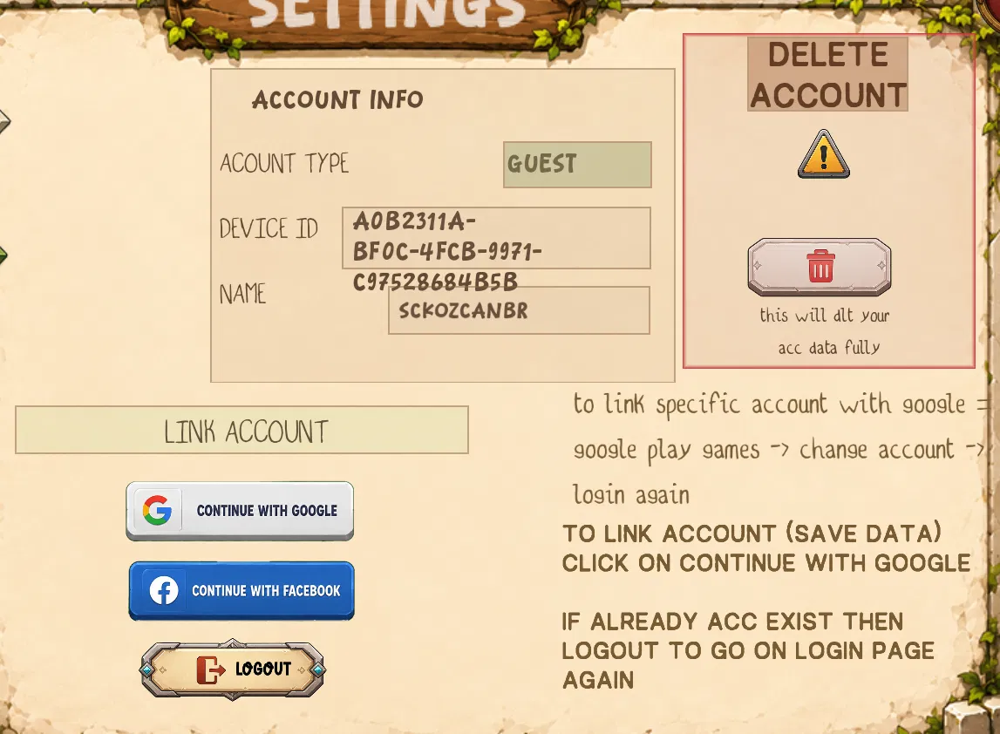

01
Open WallFall
Launch WallFall and enter the game normally.
Permanently delete your WallFall account and associated account data. The deletion request is completed inside WallFall, not on this website.
Open the account/settings area in WallFall and follow the deletion flow. The supplied account screen shows the Delete Account control inside Settings.
Launch WallFall and enter the game normally.
Open the Settings screen from the game interface.
Go to the Account section where account controls are shown.
Choose the Delete Account control in the account section.
Review the deletion action and confirm the request in WallFall.
After confirmation, WallFall permanently deletes the account through the game's deletion system.

This website explains the process; it does not perform account deletion itself.
Deleting a WallFall account removes WallFall account-associated data handled by the game's deletion system, including where applicable:
Certain information may be retained when necessary for security, abuse prevention, moderation, fraud prevention, legal obligations, or resolving disputes.
WallFall includes player reporting and moderation. Moderation records may be retained when necessary for safety, abuse prevention, moderation history, security, or legal compliance. Account deletion does not promise that every moderation record disappears immediately.
KAMRION has not published a specific universal retention period on this page.
Contact KAMRION using the official privacy/support address. Include enough information for KAMRION to identify the account and process the request. Do not send passwords, authentication codes, or other sensitive credentials.
[OFFICIAL PRIVACY EMAIL]